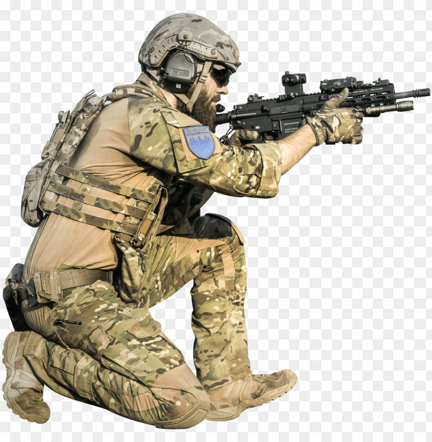

First name: Anton
Last name: Myatselitsa
Contacts: e-mail 8metel9@gmail.com phone +375291950666
About myself: My goal and priorities in life is to always go to the end ! Thoughtful, communicative, responsible, with an analytical mindset. All my life work with people. have extensive experience in management work.One of my life principles is education and self-improvement always. It is always necessary to follow up and I am ready for this. And I will run into it!
Skills: HTML, CSS, Bootstrap, JS, React, Node.JS, MySQL, PHP
Code examples:
const Ob = {
firstName: 'Anton' ,
lastName: 'Antonov' ,
age: 30 ,
animal: true
};
console.log (Ob);
Experience: Udemy courses - 1.Web development - from scratch to professional 2.Full course JS and React
Education: masters of degree (Psychological Sciences), 2 Udemy coursers, Stepik
English: A2